Module 3 Lab: g:profiler Visualization
This work is licensed under a Creative Commons Attribution-ShareAlike 3.0 Unported License. This means that you are able to copy, share and modify the work, as long as the result is distributed under the same license.
By Veronique Voisin, Ruth Isserlin, Gary Bader
Goal of the exercise
Create an enrichment map and navigate through the network
During this exercise, you will learn how to create an enrichment map from gene-set enrichment results. The enrichment results chosen for this exercise are generated using g:Profiler but an enrichment map can be created directly from output from GSEA, BinGo, Enrichr or alternately from any gene-set tool using the generic enrichment results format.
Data
The data used in this exercise is a list of frequently mutated genes that we used in previous exercise. Pathway enrichment analysis has been run using g:Profiler and the results have been downloaded as a GEM format.
EnrichmentMap
A circle (node) is a gene-set (pathway) enriched in genes that we used as input in g:Profiler (frequently mutated genes).
edges (lines) represent genes in common between 2 pathways (nodes).
A cluster of nodes represent overlapping and related pathways and may represent a common biological process.
Clicking on a node will display the genes included in each pathway.
Description of this exercise
We run and saved g:Profiler results using different parameters. An enrichment map represents the result of enrichment analysis as a network where significantly enriched gene-sets that share a lot of genes in common will form identifiable clusters. The visualization of the results as these biological themes will ease the interpretation of the results.
The goal of this exercise is to learn how to:
- upload g:Profiler results into Cytoscape EnrichmentMap to create a map.
- upload several g:Profiler results at the same time to create one map and learn how to distinguish the results.
- to compare the differences resulting from the use of different g:Profiler parameters at the enrichment map level.
Start the exercise
To start the lab practical section, first create a gprofiler_files directoty on your computer and download the files below.
Right click on link below and select "Save Link As...".
Place it in the corresponding module directory of your CBW work directory.
Five files are needed for this exercise:
- Enrichment result 1: gProfiler_hsapiens_max10000.gem.txt
- In g:Profiler, the parameters that we used to generate this file were:
- GO_BP no electronic annotation,
- Reactome,
- Benjamini-HochBerg FDR 0.05
- No restriction on the number of genes in a geneset
- Enrichment result 2:gProfiler_hsapiens_max250.gem.txt
- In g:Profiler, the parameters that we used were:
- GO_BP no electronic annotation,
- Reactome,
- Benjamini-HochBerg FDR 0.05.
- The results were filtered using the g:Profiler Term size slidebar and only the enriched gene-sets that contain equal or less than 250 genes per gene-set were included in the result file (gProfiler_hsapiens_max250.gem.txt).
- Enrichment result 3:gProfiler_hsapiens_Baderlab_max250_gem.txt
- Pathway database 1 (.gmt):gprofiler_full_hsapiens.name.gmt
- This file can be downloaded directly or can be been created by concatenating the hsapiens.GO/BP.name.gm and the hsapiens.REAC.name.gmt files contained in the g:Profiler gprofiler_hsapiens.name folder.
- Pathway database 2 (.gmt):Human_GOBP_AllPathways_no_GO_iea_June_20_2019_symbol_max250gssize.gmt
Exercise 1a
Step 1
Launch Cytoscape and open the EnrichmentMap App
1a. Double click on Cytoscape icon
1b. Open EnrichmentMap App
In the Cytoscape top menu bar:
Click on Apps -> EnrichmentMap

- A 'Create Enrichment Map' window is now opened.
Step 2
Create an enrichment map from 2 datasets and with a gmt file.
2a. In the 'Create Enrichment Map' window, drag and drop the 2 enrichment files gProfiler_hsapiens_max10000.gem.txt and gProfiler_hsapiens_max250.gem.txt.
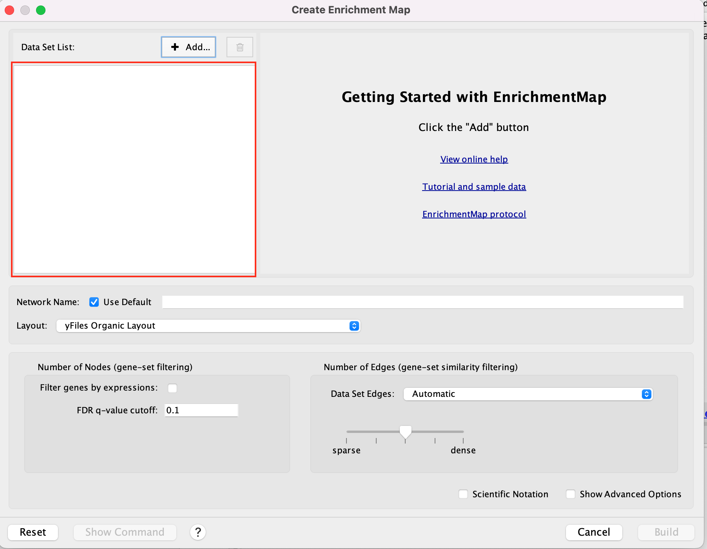
2b. In the white box, click on "gProfiler_hsapiens_max250.gem (Generic/gProfiler)
2c. On the right side, go to the GMT field, click on the 3 radio button (...) and locate the file gprofiler_full_hsapiens.name.gmt that you have saved on your computer to upload it.
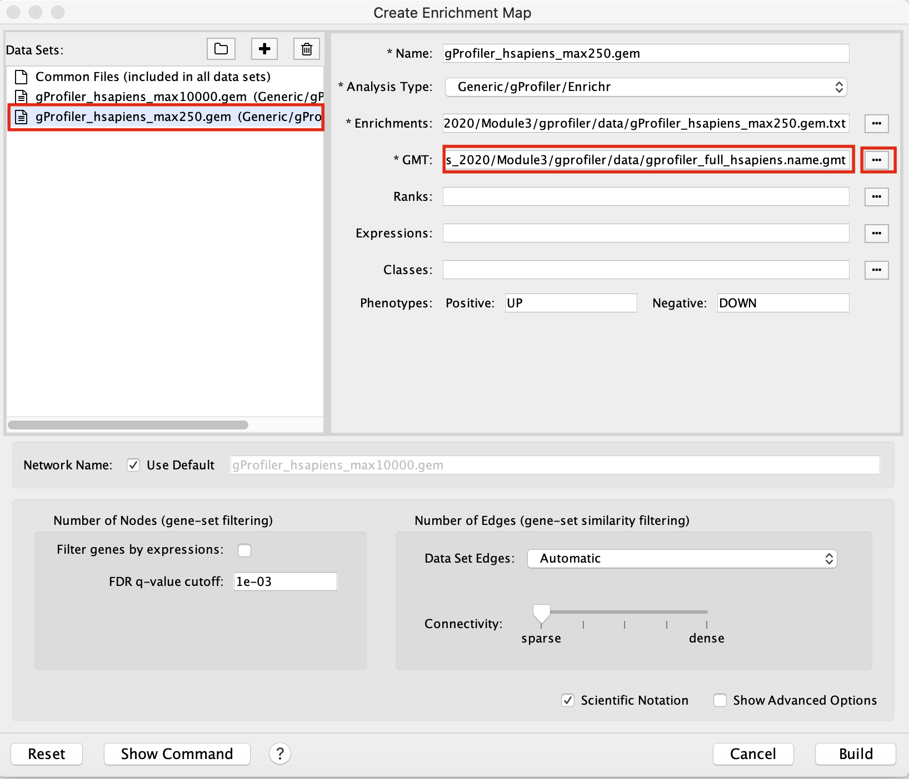
2d. In the white box, click on "gProfiler_hsapiens_max10000 (Generic/gProfiler)
2e. On the right side, go to the GMT field, click on the 3 radio button (...) and locate the file gprofiler_full_hsapiens.name.gmt that you have saved on your computer to upload it.
2f. Locate the FDR q-value cutoff field and set the value to 0.001
2g. Select the Connectivity slide bar to sparse.
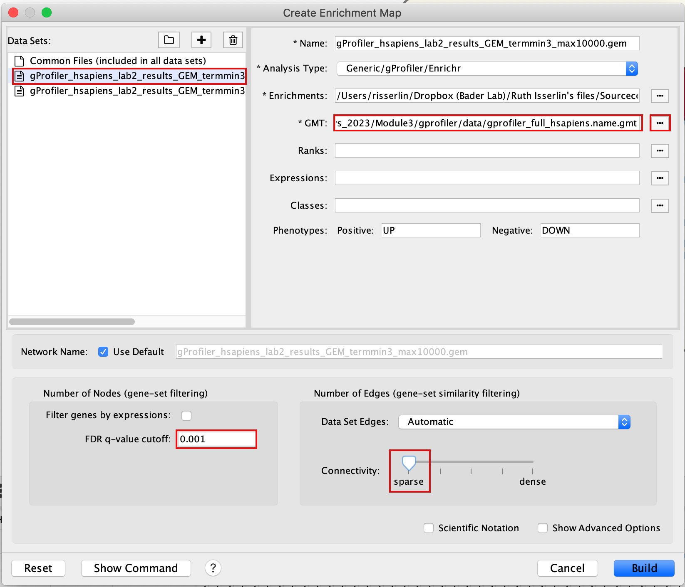
2h. Click on Build. * a status bar should pop up showing progress of the Enrichment map build.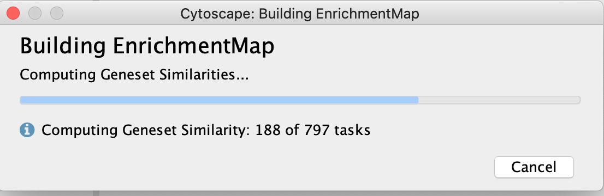
Step3: Explore the results:
In the EnrichmentMap control panel located at the left:
- select the 2 Data Sets (checked by default)
- set Chart Data o Color by Data Set
- select Publication Ready to remove gene-set label to have a global view of the map.
un-select Publication Ready when you explore the map in more detail to see the gene-set names.
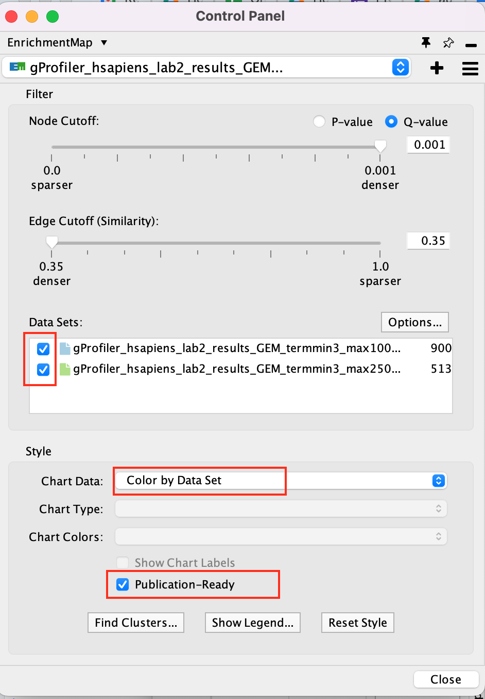
On the map, a node that is coloured both green and blue is a gene-set that is found in the both of the 2 gProfiler result sets that we have been uploaded. * A node that is blue is a gene-set that is found only in the file gProfiler_hsapiens_max10000 . * A blue edge represents genes that overlap between gene-sets found in the file gProfiler_hsapiens_max10000. * A green edge represents genes that overlap between gene-sets found in the file gProfiler_hsapiens_max250.gem.
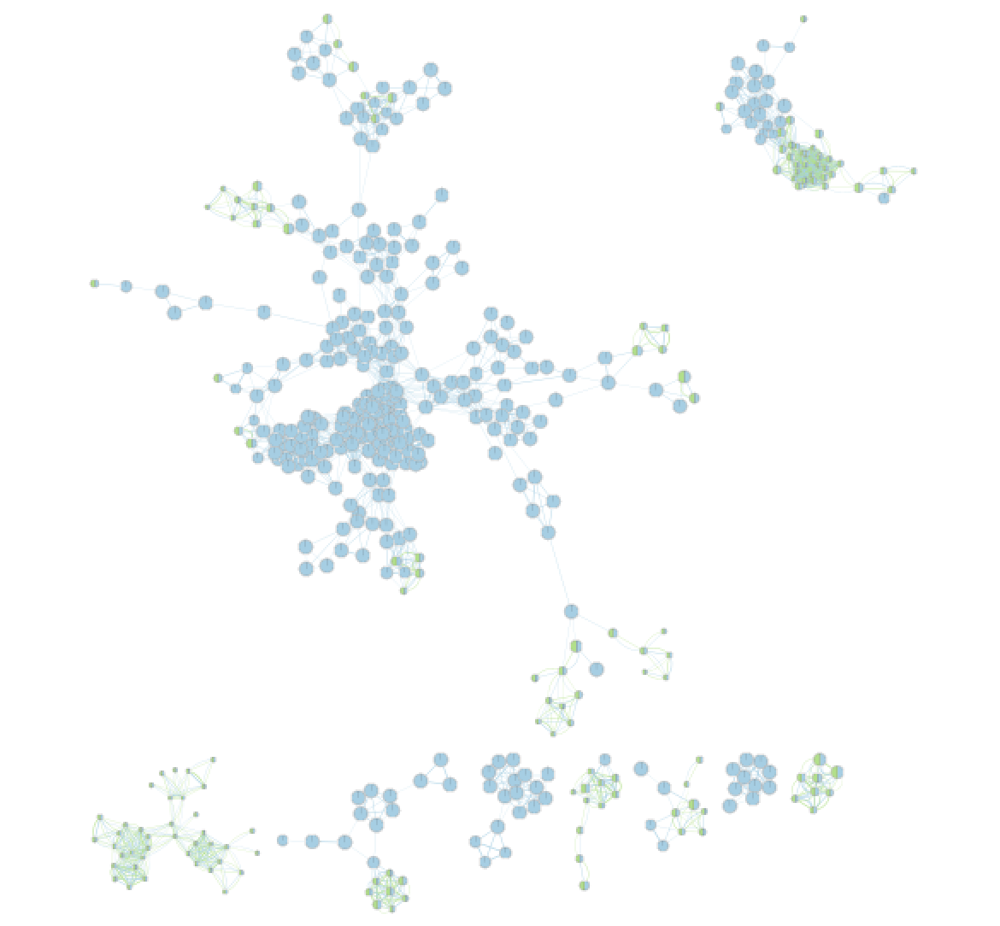
We can see clusters of blue nodes. All these nodes contain gene-sets that have more than 250 genes. Explore the detailed view (see below) to see if this cluster corresponds to informative terms.
Would you have lost information by filtering gene-sets larger than 250 genes?
Explore Detailed results
- In the Cytoscape menu bar, select 'View" and 'Show Graphic Details' to display node labels.
Make sure you have unselected "Publication Ready" in the EnrichmentMap control panel.
Zoom in to be able to read the labels and navigate the network using the bird eye view (blue rectangle).
- Select a node and visualize the Table Panel
Click on a node
For this example the node "Signaling by Notch" has been selected.
you can type it in the search bar, quotes are important.
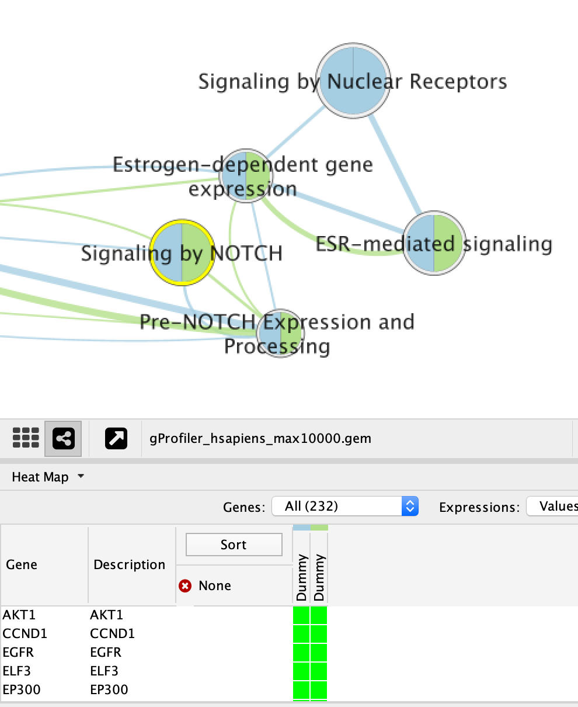
When the node is selected, it is highlighted in yellow. In table panel, we can see the genes included in the gene-set. A green colored box indicates that the gene is in the gene-set(pathway) and in our gene list. A gray colored box indicated that the gene is in the gene-set but not in our gene list.
Exercise 1b
Create an enrichment map without a gmt file to compare the results with Exercise 1a.
- Go to Control Panel and select the EnrichmentMap tab.
- Click on the "+" sign to re-open the Create Enrichment Map window.

- In the white box, select the "gProfiler_hsapiens_max250.gem (Generic/gProfiler) file
- Locate the GMT field and delete the file name , leaving it blank.
- In the white box, select the "gProfiler_hsapiens_max10000 (Generic/gProfiler) file
- Locate the GMT field and delete the file name , leaving it blank.
- Use same parameters as in exercise 1a: FDR q-value cutoff of 0.001 and Connectivity to sparse.
- Click on Build
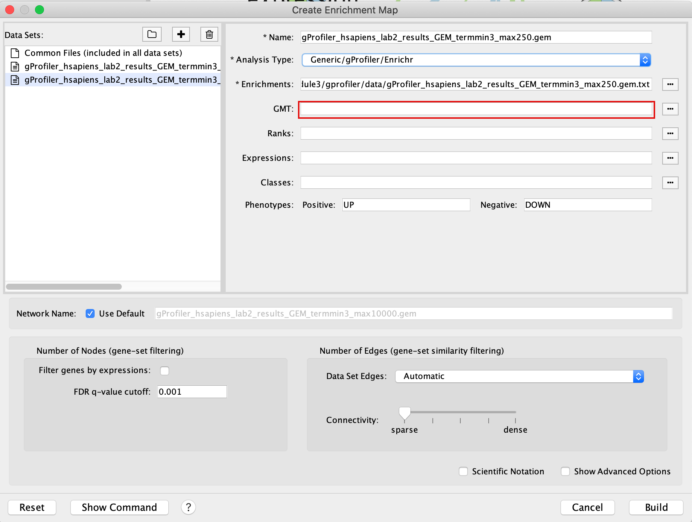
Explore the results:
In the EnrichmentMap control panel located at the left:
- select the 2 Data Sets (selecteded by default)
- set Chart Data o Color by Data Set
- select Publication Ready to remove gene-set label to have a global view of the map.
uncheck this box when you explore the map in details to see the gene-set names.
On the map, a node that is coloured both green and blue is a gene-set that is found in the both of the 2 gProfiler result sets that we have been uploaded.
- A node that is blue is a gene-set that is found only in the file gProfiler_hsapiens_max10000 .
- A blue edge represents genes that overlap between gene-sets found in the file gProfiler_hsapiens_max10000.
- A green edge represents genes that overlap between gene-sets found in the file gProfiler_hsapiens_max250.gem.
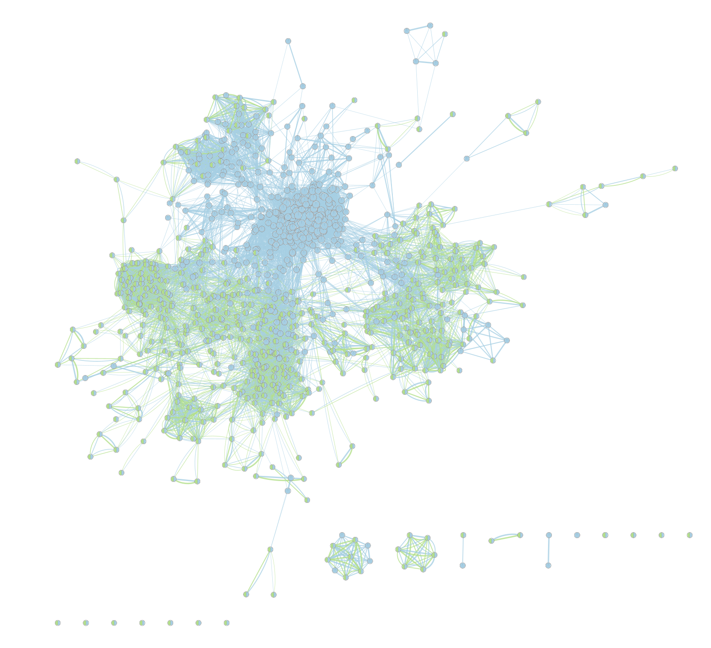
Conclusion of exercises 1 a and 1b:
Loading a gmt file to create an enrichment map from g:Profiler result is optional. However, there are 2 main beneficial aspects to uploading a gmt file:
- the map will be less condensed and easier to read and interpret.
- clicking on a node will display all genes in the gene-set and not only genes included in our query list.
Exercise 1c
Create an enrichment map from the results of g:Profiler generated using the custom Baderlab gene-set file. To get a map that is easy to read and that does not display too many gene-sets, one option is to focus the analysis on gene-sets (pathways) that contain 250 genes or less. We prefiltered our pathway database prior to upload it into g:Profiler so that FDR is calculated only on these gene-sets ( as opposed to exercise 1a where the FDR was calculated on all gene-sets and then some gene-sets > 250 genes were excluded from the result file ).
filtered gmt file: (Human_GOBP_AllPathways_no_GO_iea_June_24_2019_symbol_max250gssize.gmt).
We have uploaded this file as a custom gmt file in g:Profiler and run the query.
- To create an enrichment map of these results:
- Go to Control Panel and select the EnrichmentMap tab.
- Click on the "+" sign to re-open the Create Enrichment Map window.
- In the white box, select the "gProfiler_hsapiens_Baderlab_max250_gem.txt (Generic/gProfiler) file
Locate the GMT field and upload the file "Human_GOBP_AllPathways_no_GO_iea_June_24_2019_symbol_max250gssize.gmt".
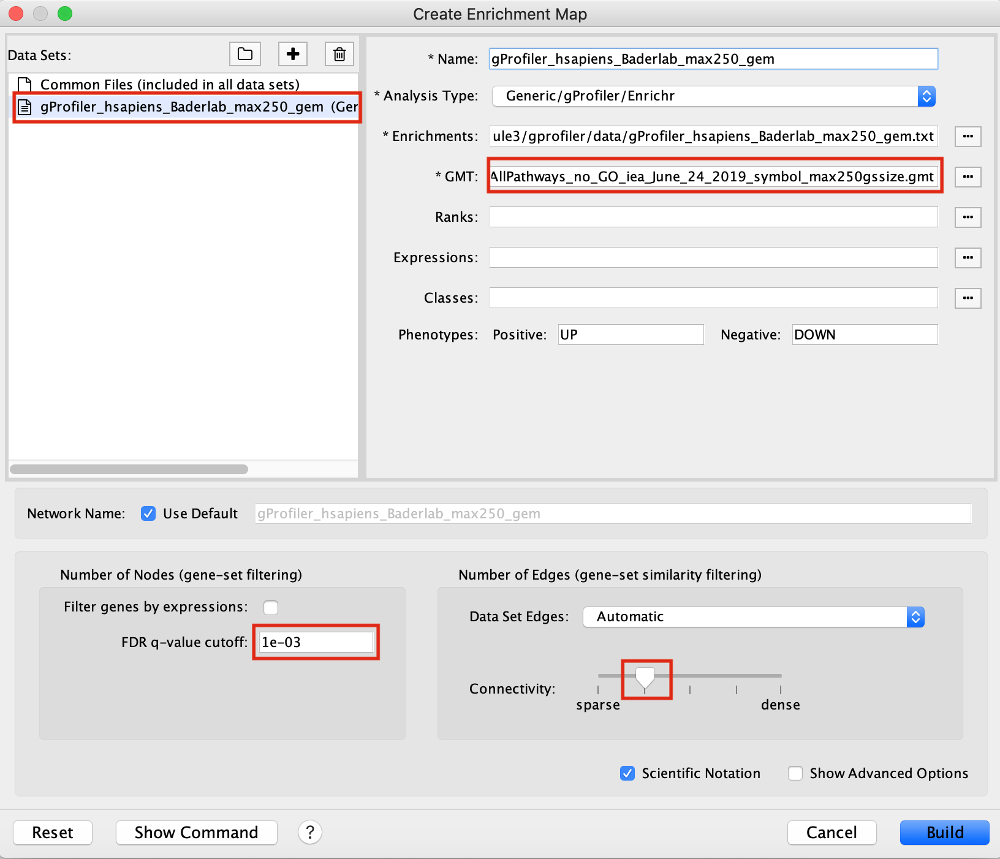
Explore the results:
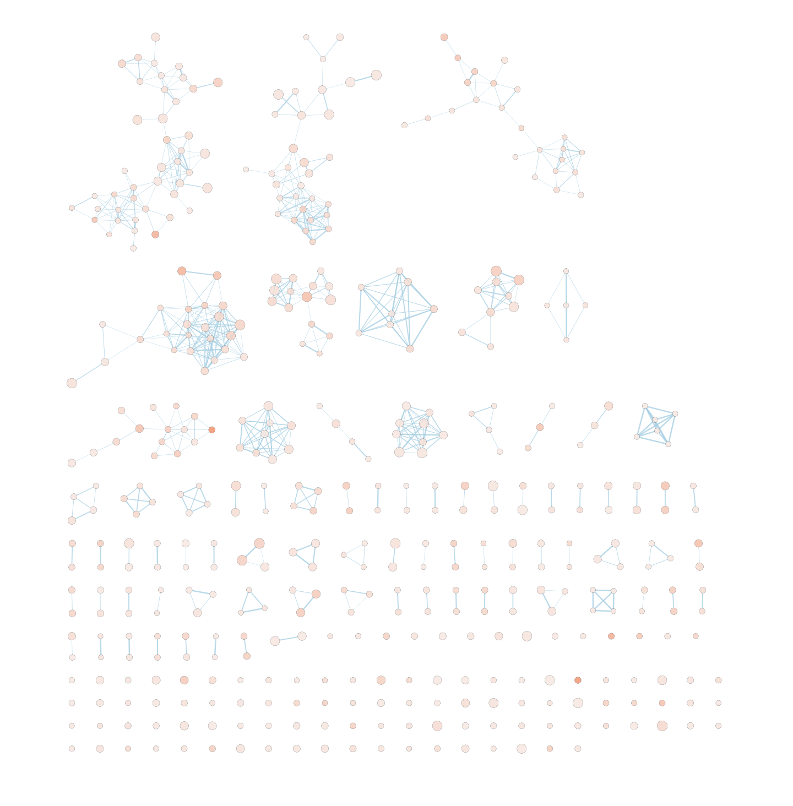
SAVE YOUR CYTOSCAPE SESSION (.cys) FILE !